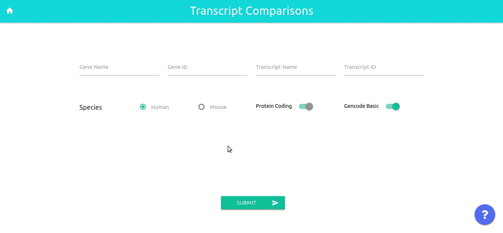
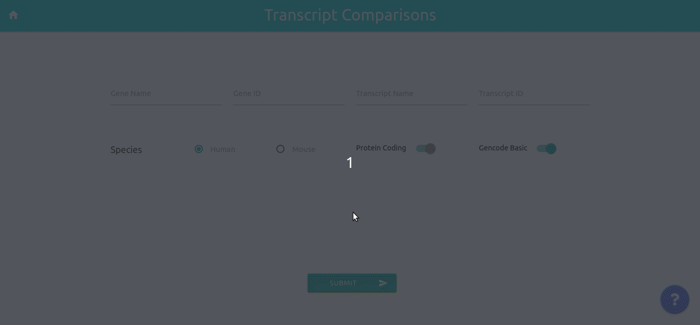
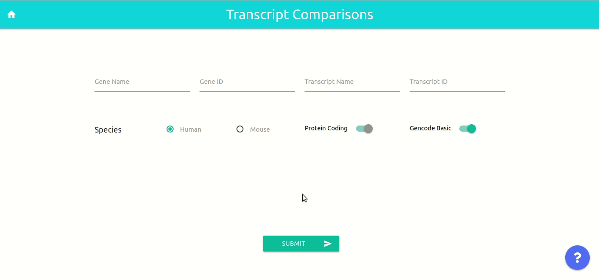
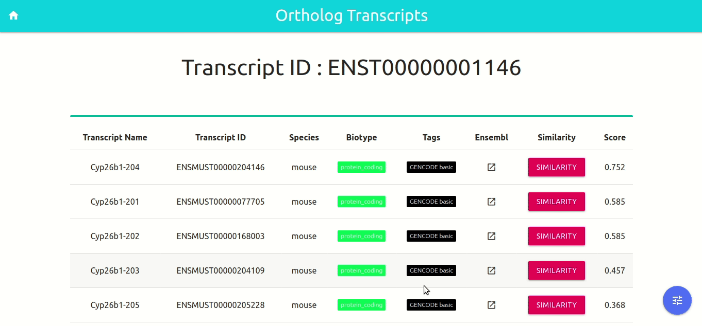
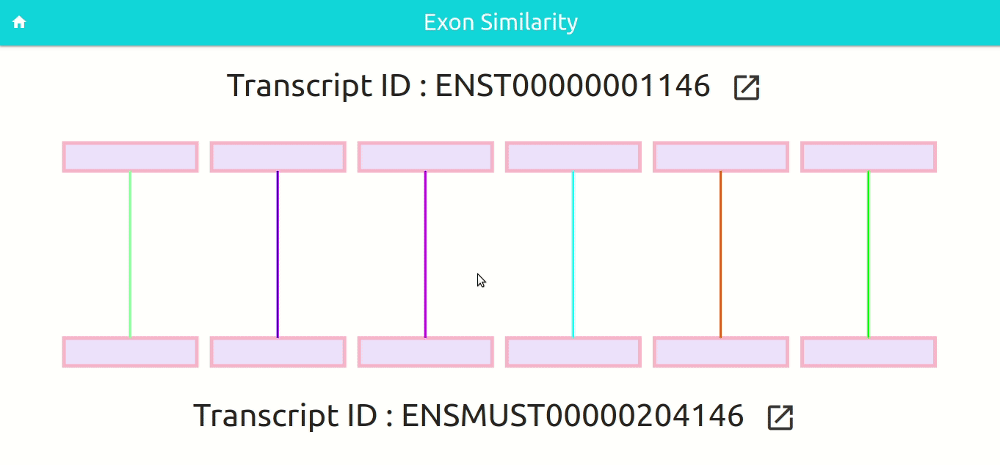
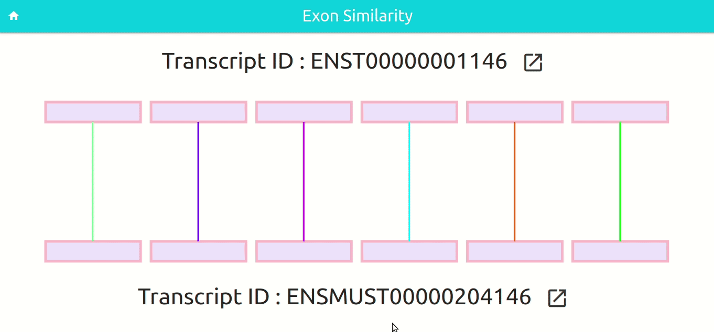
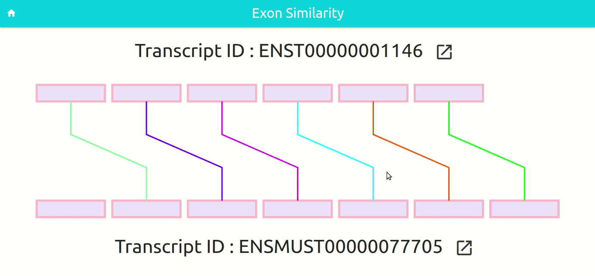
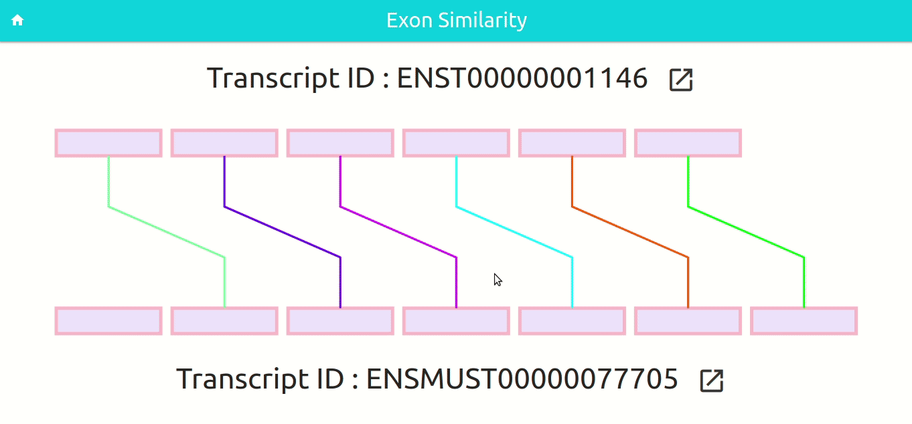

Selecting the Gene Name
The user can select the name of the gene of interest.
The page will be updated by showing the id of the selected gene, and the transcripts will be filtered according to the selected gene.
Selecting the Gene ID
The user can select the ID of the gene of interest.
The page will be updated by showing the name of the selected gene, and the transcripts will be filtered according to the selected gene.
Selecting the Transcript Name
The user can select the name of the transcript of interest.
The page will be updated by showing the information of the selected transcript.
Selecting the Transcript ID
The user can select the ID of the transcript of interest.
The page will be updated by showing the information of the selected transcript.
Filling the Text Boxes
The user can also write in the textbox, instead of only selecting from the options.
As the user enter characters, suggestions will appear to ease the task.
Changing Species
By default we are considering the human genes and transcripts as input. However it can be changed by selecting the 'mouse' option or vice-versa
After changing the species the page will be updated and the appropriate genes and transcripts will be loaded.
Toggling Gencode Basic
By default we are analyzing only the stable and complete 'Gencode Basic' set of transripts. However by toggling the gencode_basic switch, other ordinary transcripts can be included to the analysis.
Although the rankings can be computed, the protein similarity or the UTR regions may not be identified. Since we only collected phase information for gencode_basic transcripts.
Ranking the Orthologous Transcripts
After selecting a transcript and clicking on the 'submit' button the orthologous transcripts to the selected transcript will be listed.
It takes a while to compute the ranking, and after that is completed the orthologous transcripts are listed based on their similarity score.
Changing Alignment Mode
By default we use the splice site weighted global alignment algorithm. However it's also possible to use the usual global alignment algorithm.
The effect of the change can be directly observed from the scores.
Changing Algorithm Parameters
It is possible for the users to change the parameters used by the ranking algorithm, namely:
- Match score
- Mismatch penalty
- Gap open penalty
- Gap extend penalty
- Exon skip penalty

After changing the parameters the new scores will be computed and the ranking will be updated accordingly
Visualizing Exon Similarity
By clicking on the 'Similarity' button the user will be taken to the Transcript Visualization page.
In this page, the exons will be paired against the most similar ones according to our algorithm. Along with the visualization the exon sequences and exon level similarity can also be observed.
Viewing Exon Sequences
By selecting a exon the user can view the exon sequence.
The UTR are marked in orange for better understanding.
Viewing on Ensembl
By clicking on the link next to transcript id, the user will be able to view that transcript on Ensembl.

Observing Exon Sequence Similarity
By selecting a exon pair and and then going to the 'Transcript Similarity' tab, the user can observe the similarity of the sequences of the paired exons
The sequence similarity is computed using MUSCLE, scored with the parameters selected by the user. The aligned positions are colored according to the score at that position.
Observing Protein Similarity
By selecting a exon pair and and then going to the 'Protein Similarity' tab, the user will be able to observe the similarity of the proteins translated from the paired exons
The protein similarity is computed using MUSCLE, scored with the default Blosum62 matrix. The aligned positions are colored according to the score at that position.
Observing Splice Site Similarity
By selecting a exon pair and and then going to the 'Splice Site Similarity' tab, the user can observe the similarity of the splice sites of the paired exons
The splice site similarity is computed using our weighted global alignment algorithm, scored with the parameters selected by the user. The aligned positions are colored according to the score at that position.